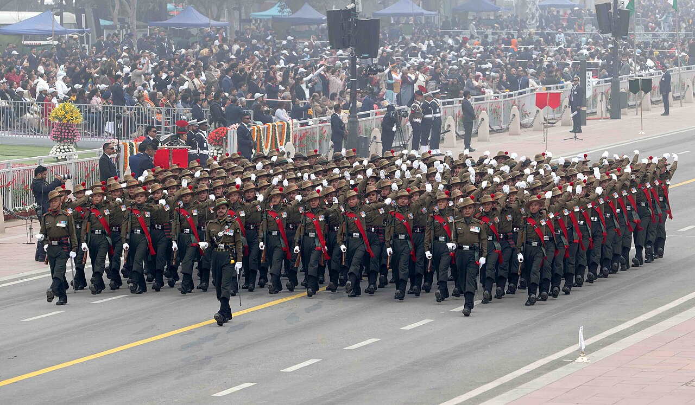

Heritage · The Tricolour
The Folded Pride: The Story of the Tricolour

A flag is only cloth — and yet it is the one piece of cloth a soldier will die for, and the one that, in the end, covers them. The Indian tricolour — the tiranga — is woven into the deepest moments of the nation's life, from a child's first Independence Day to a hero's last journey.
My poem The Folded Pride is written in the voice of the flag itself: "I once danced with the wind, proud and high… but now I fold, in solemn embrace, to cradle the hero who kept me in place."
Saffron, white and green
India's national flag was adopted on 22 July 1947, weeks before Independence. Its design — a horizontal tricolour of saffron, white and green with a navy-blue Ashoka Chakra of twenty-four spokes at its centre — was based on the work of freedom fighter Pingali Venkayya.[1]
Each element carries meaning: saffron for courage and sacrifice, white for peace and truth, green for faith and growth, and the Chakra — the wheel of dharma, or law — for ceaseless forward motion. The flag is, in miniature, a statement of what the nation hopes to be.[1]
I am not mere cloth; I am their trust, their final salute as they ascend to honor's crest.
The flag that drapes a hero

There is one role of the tricolour that my poem dwells on: when a soldier falls in service, their coffin is draped in the national flag — a final, supreme honour. The same cloth that flew over forts and parade grounds folds itself, with great ceremony, around the body of the one who defended it.
That fold is then handed to the family. "And when I'm passed to trembling hands," the flag says in the poem, "a mother's grief, a father's stand, I carry their story, their life untold." It is one of the most solemn moments in any nation's life.
More than a symbol
When the law around the flag was eased in 2002 and again in recent years — allowing citizens to fly the tiranga more freely, including at night — it reflected a simple truth: the flag belongs to the people, and to the soldiers who carry its honour at the cost of their lives.
To see the tricolour, then, is to see two things at once: a nation's pride flying high, and the folded grief of every family that received it in place of a loved one. "A flag for the fallen," the poem ends, "yet their memory survives."
Sources & further reading
All images via Wikimedia Commons, used under the licences shown in each caption.